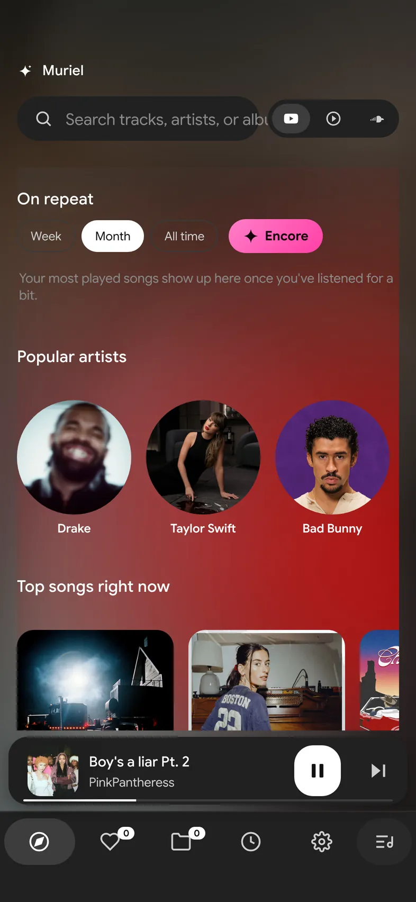
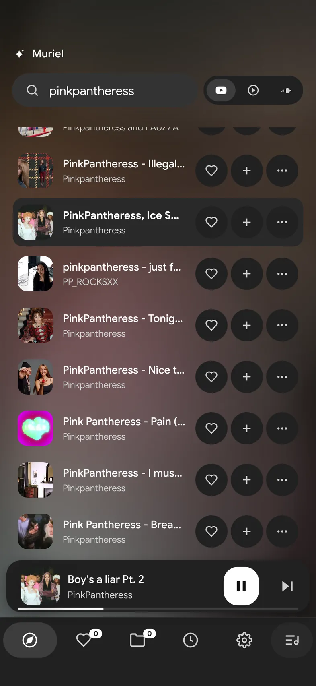
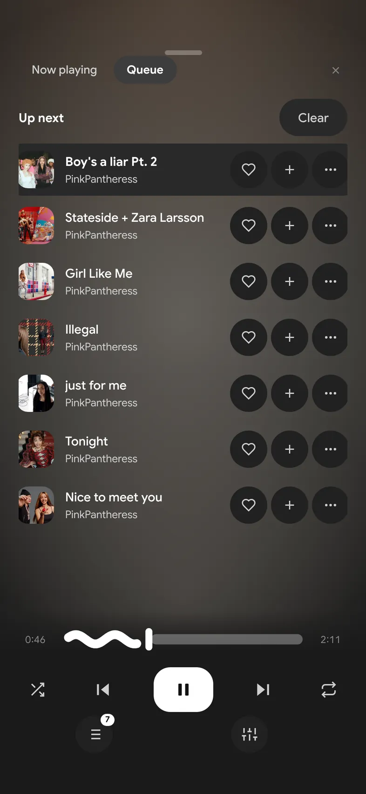

Lyrics you can sing
Word-by-word karaoke, translations, a fullscreen sing-along mode, and an editor to write and sync your own.
Free · open source · new builds every week
Muriel plays YouTube, YouTube Music and SoundCloud with synced lyrics, offline songs and no account. On iPhone, Android, Windows, Mac and Linux.
Live from GitHub
Word-by-word karaoke, translations, a fullscreen sing-along mode, and an editor to write and sync your own.
YouTube, YouTube Music and SoundCloud. No premium, no skip limits.
Songs you play stay on your phone, so they keep going on the train or in airplane mode.
Your own year-in-music recap, any day of the year: top songs, artists, minutes and streaks. Plus your top 3 on repeat right on Home.

Endless picks from your genres and the artists you play most.
Import from Spotify, Apple Music and YouTube, YT Music or SoundCloud playlist links.
Background playback with controls on your lock screen.
EQ, effects, crossfade, sleep timer, mini player, downloads as MP3 or FLAC, and plugins.


Always the newest build, straight from GitHub.
No SideStore? Install the .ipa with Sideloadly from your computer. iPhones only run signed apps, so one of these is needed.
Or install it with a desktop shortcut from PowerShell:
$ProgressPreference='SilentlyContinue'; $p="$env:LOCALAPPDATA\Programs\Muriel"; ni -ItemType Directory -Force $p | Out-Null; iwr https://github.com/cloverscripts/riff-muriel/releases/download/windows-latest/Muriel.exe -OutFile "$p\Muriel.exe"; Unblock-File "$p\Muriel.exe"; $s=(New-Object -ComObject WScript.Shell).CreateShortcut("$([Environment]::GetFolderPath('Desktop'))\Muriel.lnk"); $s.TargetPath="$p\Muriel.exe"; $s.IconLocation="$p\Muriel.exe,0"; $s.Save()Linux in one line (needs FUSE 2, e.g. fuse2 or libfuse2):
mkdir -p ~/Applications && curl -L -o ~/Applications/Muriel.AppImage https://github.com/cloverscripts/riff-muriel/releases/download/v1.1.2/muriel-1.1.2-linux-x86_64.AppImage && chmod +x ~/Applications/Muriel.AppImage && ~/Applications/Muriel.AppImageYes. No ads, no account, no subscription. It's open source and based on Riff by rootscripts (MIT).
Straight from GitHub: it adds up every download of every Muriel file there and refreshes while this page is open. Downloads from before the counter existed are included where GitHub still had them.
iOS only runs apps signed with a certificate from Apple. Muriel doesn't use leaked certificates (those get revoked and can push anything to your phone), so on iPhone it installs through SideStore or Sideloadly with your own Apple ID.
Apps signed with a free Apple ID expire after 7 days. SideStore refreshes them automatically on your phone; with Sideloadly, just install again.
Yes, on iPhone and Android, with play, pause and skip on the lock screen.
Inside Muriel (Library → Offline). On iPhone they're also in the Files app under Muriel.